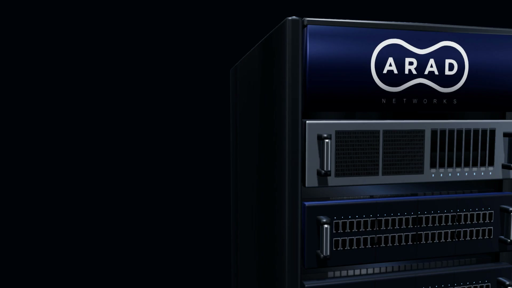

Insights
무엇을 연결하고, 어디에서 나누고, 어떤 조건을 살펴야 할까요. 네트워크 보안과 AI 인프라, 현장 통신을 이해하는 기술 이야기입니다.

Isolate AI
기기 목록보다 먼저 살펴야 할 것은 기기 사이의 통신 관계입니다.
Accelerate AI
AI 작업의 성능을 이해하려면 연산 사이의 데이터 이동도 살펴야 합니다.
Connect AI
공간과 기존 기반, 운영 요구가 현장에 맞는 연결 방식을 결정합니다.